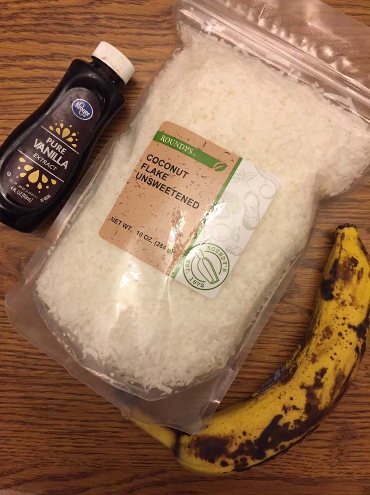

How to make healthy coconut banana cookies

Step 1 - Gather your ingredients.
Finished!! Now let them cool and enjoy your cookies! 👍
ingredients & kitchen stuff
- Unsweetened coconut flakes
- 1/2 tablespoon of vanilla
- Mixed mashed banana
- A bowl
- Something to mash and mix (fork)
- An oven with metal plates
- parchment-paper-lined sheet(s)
How to get started
Making these healthy 3-ingredient coconut cookies is very easy. Just mix a mashed banana, 3/4 cup of unsweetened coconut flakes and 1/2 tablespoon of vanilla in a bowl, drop by heaping tablespoons on a parchment-paper-lined baking sheet, shape with your hands into cookies and bake in pre-heated 350F oven for 20-25 minutes, or until golden brown. Take out the cookies and let them cool down fully on the baking sheet before attempting to handle them :) When these coconut banana cookies first come out of the oven, they are very fragile and will fall apart, but they firm up once they cool down. Enjoy!!